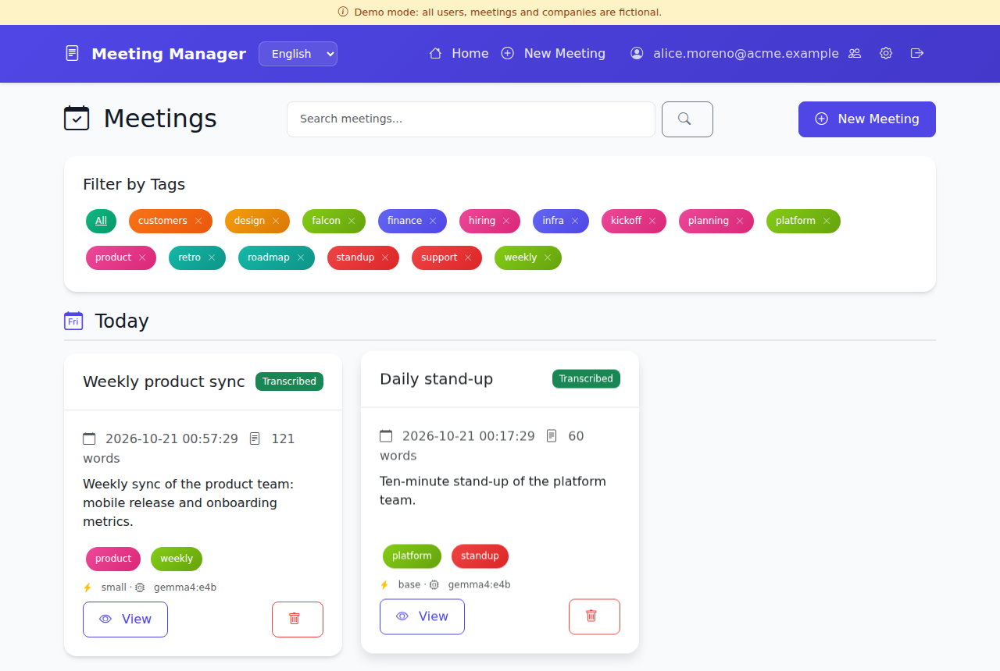
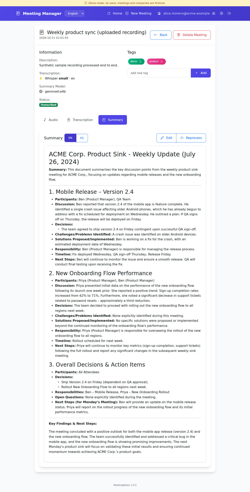
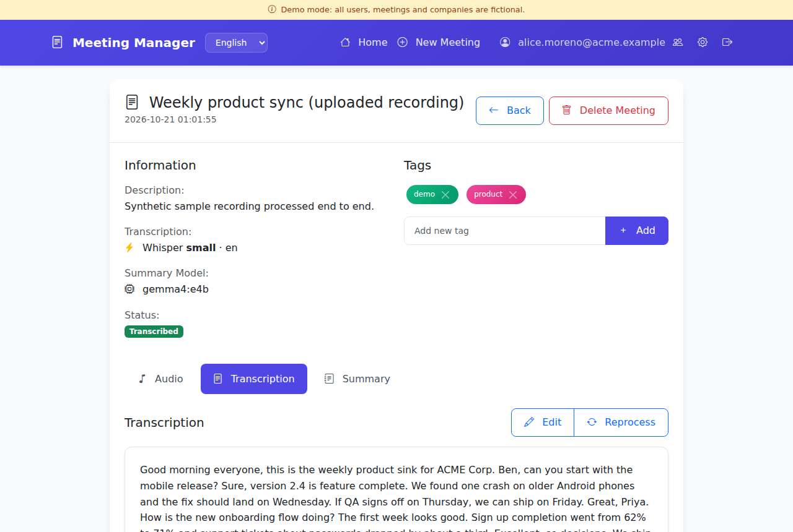
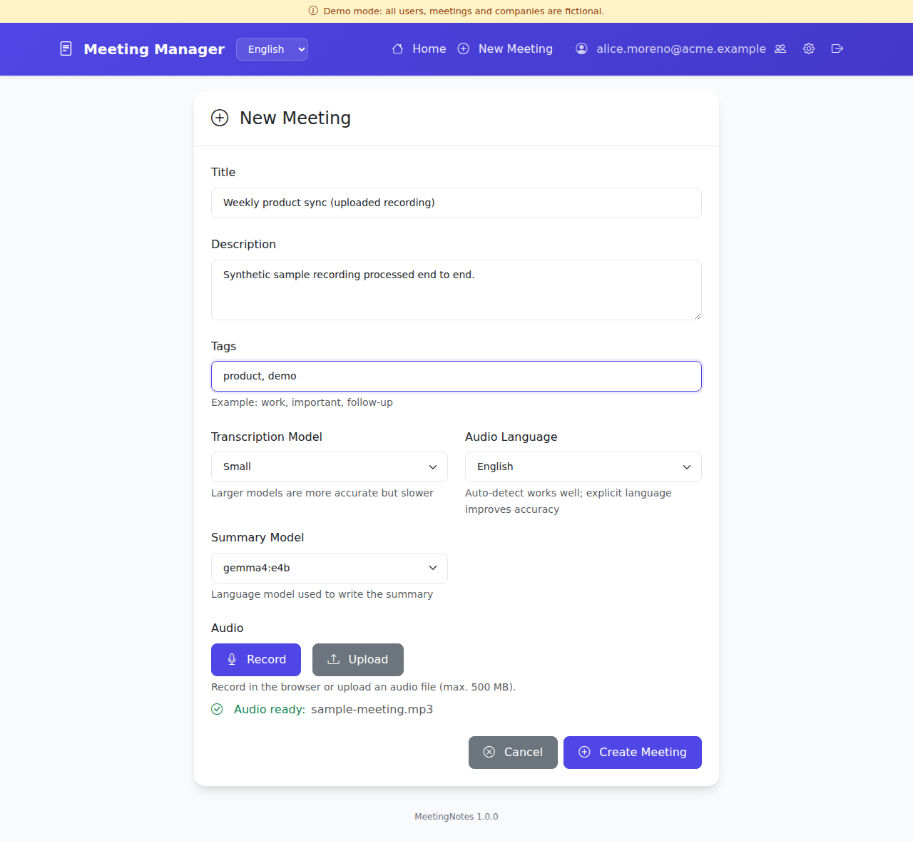
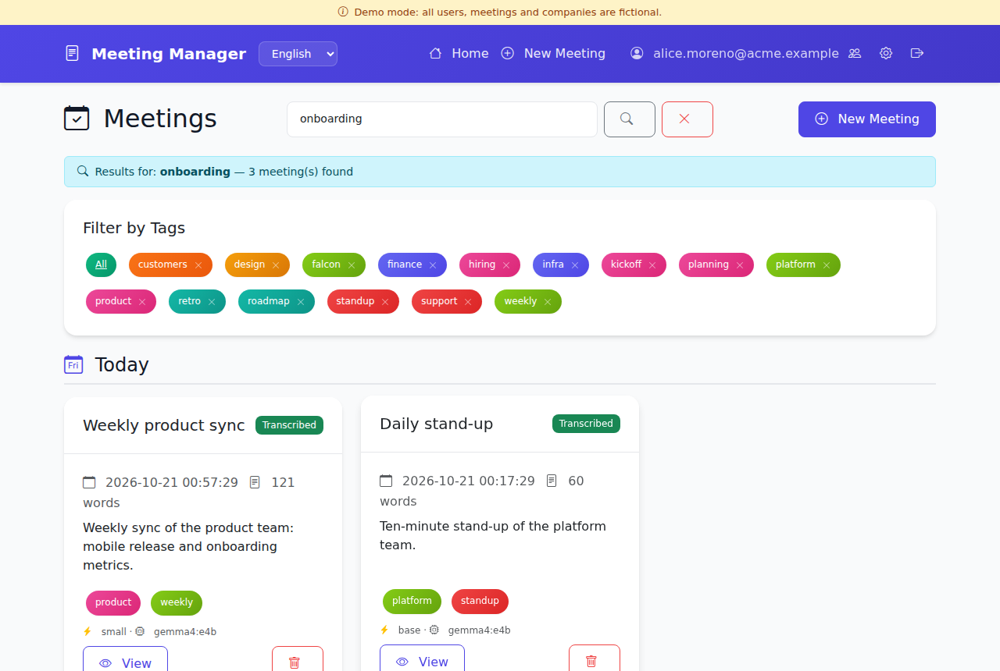
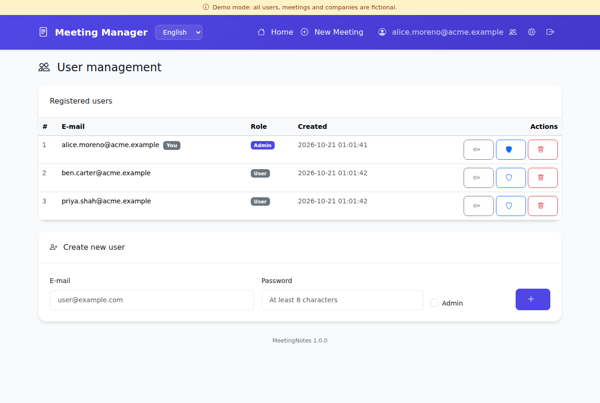
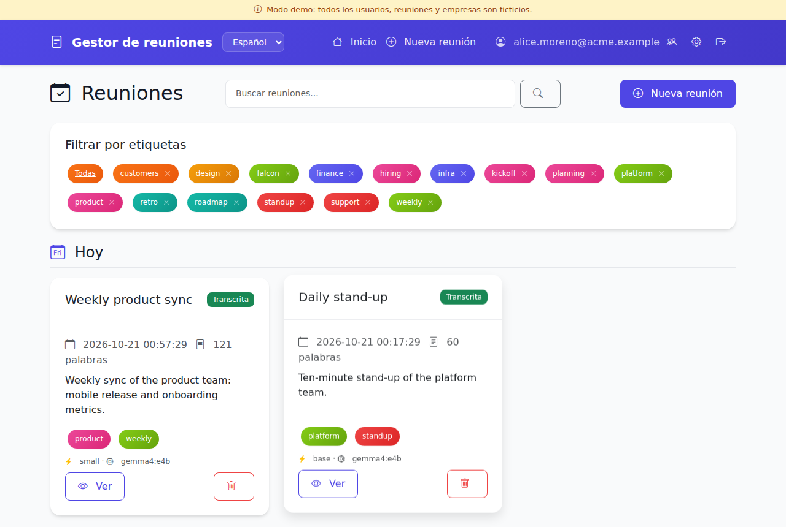

Record / upload→Whisper transcript→
LLM summary (EN + ES)→Edit, tag, search
Features
Record in the browser
Or upload MP3, WAV, M4A, OGG, FLAC and WebM files of any length.
Whisper transcription
faster-whisper, CPU or NVIDIA GPU, from tiny to large-v3, with language auto-detection.
Local LLM summaries
Topics, decisions, owners and next steps, written by any Ollama model or OpenAI-compatible API.
Edit and reprocess
Fix a transcript, rewrite a summary, or rerun either one with a bigger model.
Tags and search
Full-text search over transcripts and summaries, tag filters, timeline by date.
Multi-user
Private storage per user, admin user management, optional SSO through your reverse proxy.
Screenshots






Screenshots from demo mode. Acme Corp and all people shown are fictional; the sample recording is synthetic speech.
Try it
git clone https://github.com/mmiretta/meetingnotes.git
cd meetingnotes
DEMO_MODE=1 docker compose up -d --build
# open http://127.0.0.1:5002 and sign in as alice.moreno@acme.example / demoFull stack with Whisper and Ollama:
cp .env.example .env # set SECRET_KEY, ADMIN_EMAIL, ADMIN_PASSWORD
docker compose --profile whisper --profile ollama up -d --build
docker compose exec ollama ollama pull llama3.2:3b